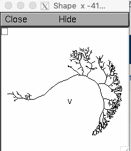

This is the readme for the models associated with the paper:
Dan O, Hopp E, Borst A, Segev I (2018) Non-uniform weighting of local motion inputs underlies dendritic computation in the fly visual system. Sci Rep 8:5787
doi: 10.1038/s41598-018-23998-9
The NEURON code contains the morphologies and biophysics (axial resistance, capacitance, and membrane leak channels) of 6 prototypical vertical system cells from the paper (Dan et al 2018). This code was contributed by Ohad Dan.
To examine the morphologies start the simulation (no mod file compiling required) with a command like (if you need more help for your platform please consult: https://senselab.med.yale.edu/ModelDB/NEURON_DwnldGuide)
nrngui mosinit.hoc
and select a (prototypical, see paper for details) VS cell, for example VS1.
An image of the cell is displayed:

We mainly utilized the trees toolbox and additional graphic edits to generate the figures in the paper.